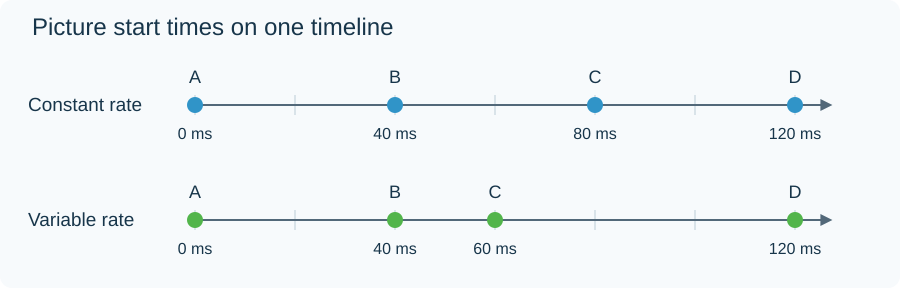

Variable Frame Rate
Variable frame rate (VFR) means that the time between successive pictures can change within a video. The player follows each picture's presentation timestamp rather than assuming one fixed interval for the whole stream.
Phones, screen recorders, and edited or combined sources can produce such files. A recording can use fewer pictures during a static period and more when the scene changes, although VFR does not require that particular strategy.

Original numerical example. Constant-rate picture starts are 0, 40, 80, and 120 ms; variable-rate starts are 0, 40, 60, and 120 ms. It is not a measurement of a particular device.
| Variable-rate example | Picture start | Interval to next picture |
|---|---|---|
| A | 0 ms | 40 ms |
| B | 40 ms | 20 ms |
| C | 60 ms | 60 ms |
An average frame rate summarizes a period; it cannot tell you every interval within it. A file described as approximately 30 fps may contain pictures with shorter and longer durations.
Timing keeps the recording intact
VFR is not inherently damaged video. When timestamps are correct and supported throughout playback, the pictures and audio can remain synchronized. Tools that assume every picture has the average duration can introduce timing errors during editing, conversion, or subtitle preparation.
For an Emby video that behaves differently after conversion, compare the source timestamps with the converted output. Converting VFR to a constant rate can repeat or drop pictures while retaining the original timeline. Merely assigning a new fixed duration to every source picture can change the duration instead.
Media inspection should include picture-level timestamps when stream-level summaries disagree. FFprobe can report individual frames; a single nominal or average rate is insufficient evidence for the full cadence.
A constant fractional rate, such as 24000/1001 fps, is a separate case: its interval is precise and remains fixed.